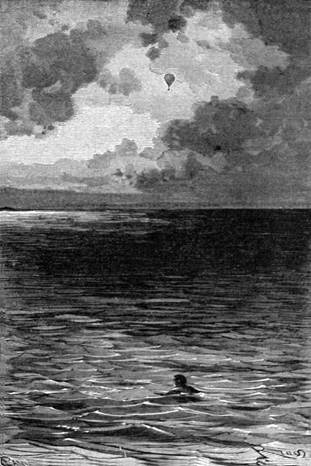

Příhody Joovy. – Ostrov Biddiomů. – Joe považován za boha. – Pohlcený ostrov. – Jezerní břehy. – Hadí strom. – Cesta pěšky. – Strasti.– Moskyti a mravenci. – Hlad. – Přelet Viktorie. – Zmizení Viktorie. – Zoufalství. – Močál. – Poslední výkřik.
Kam se poděl Joe, co ho pán nadarmo hledal?
Když skočil do jezera, bylo jeho prvním hnutím na hladině povznésti oči do výše; uzřel Viktorii už velmi vysoko nad jezerem, jak rychle stoupá, menší se víc a více, a mizí na severu, byvši v brzku uchvácena bystrým proudem. Jeho pán, jeho přátelé byli zachráněni.
„Štěstí,“ pravil si, „že mi připadlo vrhnout se do Čadu; ta myšlenka byla by se věru namanula panu Kennedyovi, i nebyl by dojista váhal učinit jako já, neboť je zcela přirozeno, že se jeden člověk obětuje, aby zachránil dva jiné. To je matematika.“
Upokojiv se v té věci, jal se pomýšleti sám na sebe; byl prostřed nesmírného jezera mezi národy neznámými a mimo vší pochybu divokými. Tím více měl proč, aby vybředl z nesnází, spoléhaje toliko na sebe; jinak se nestrachoval.
Před útokem dravých ptáků, kteří se po jeho zdání zachovali jako praví supové, byl si povšiml na obzoru ostrova; pročež ustanovil se na tom, že k němu zamíří, i jal se vynakládati všecky své vědomosti a schopnosti v plování, zhostiv se šatů, které mu nejvíce vadily; nedbal hrubě procházky osmi nebo desíti kilometrů vodou, a proto, pokud byl v širém jezeře, nemyslil na nic a ploval úsilně a přímo.
Za půldruhé hodiny zmenšila se silně vzdálenost, od ostrova jej dělící.
Ale čím více se blížil k zemi, tím neodbytněji se mu vtírala myšlenka zprvu povrchní, pak urputná. Věděl, že při jezerních březích prohánějí se krokodilové, a znal žravost těchto zvířat.
Jakkoli měl utkvělý zvyk uznávati všecko na světě přirozeným, hodný jonák cítil přece, že se ho vzmáhá nepřekonatelné pohnutí; obával se, aby bílé maso nebylo zvláště krokodilům po chutí, i ploval dále s největší opatrností, bystře se rozhlížeje. Když už měl jen asi sto sáhů ke břehu, zastíněnému zeleným stromovím, ovanul jej vzduch, prosycený pronikavým zápachem pižmovým.
„Hoj!“ pravil si v duchu, „toho jsem se právě bál! Krokodil není daleko!“
I pohroužil se rychle, ale nedosti rychle, aby nezavadil o obrovské tělo, jehož šupinatá kůže odřela jej mimochodem; považuje se za ztracena, jal se plovati se zoufalou rychlostí; vynořil se na vodní hladinu, nabral dechu a potopil se znova. Zakusil čtvrt hodiny nevýslovné úzkosti, již potlačiti nedovedla všecka jeho filosofie, a domníval se slyšeti za sebou cvakot náramné čelisti po něm chňapající. Uháněl pak pod vodou, co nejtišeji mohl; v tom byl uchopen za paži, po té kolem těla.
Ubohý Joe! poslední myšlenku věnoval svému pánovi a potom dal se v zápas, cítě, že jest vlečen nikoli na dno jezera, jak činívají krokodilové, aby pozřeli kořist, alebrž na hladinu. Sotva popadl dechu a otevřel oči, znamenal, že jest mezi dvěma negry černými jako dřevo ebenové; tito Afričané drželi jej pevně a vyráželi ze sebe divné výkřiky.
„Aj!“ zvolal Joe mimovolně, „černoši místo krokodilů! Na mou věru, to je mi přece milejší. Ale kterak se ti chlapíci odvažují koupat v těchto místech?“
Joe nevěděl, že čadští ostrované jako mnoho jiných černochů potápějí se bez úrazu ve vodách krokodily ohrožovaných, nedbajíce jich přítomnosti; zvláště pak obojživelníci jezera čadského těší se pověsti dosti zasloužené neškodných ještěrů.
Ale zda nevyvázl Joe z nebezpečí, aby zabředl v druhé? O tom rozhodnou události, a poněvadž neviděl jiného zbytí, nechal se vyvésti až na břeh, nedávaje na sobě znáti strach.
„Ti lidé,“ pravil si, „viděli patrně Viktorii, jak se nesla nad jezerní vodou jako povětrná obluda; byli vzdálenými svědky mého pádu a proto budou zajisté šetřiti ohledů k člověku s nebe spadlému! Ať mají vůli!“
Až sem dospěl Joe v úvahách, když vystoupil na břeh mezi hulákající dav obojího pohlaví a všelikého věku, ale ne všelikých barev. Octl se u kmene Biddiomů krásně černého. Ba nebylo mu ani rdíti se pro lehký svůj oděv; bylť oblečen po „domácku“ po nejnovější tuzemské modě.
Prve však, nežli měl kdy pochopiti své postavení, nemohl si nevšimnouti, že je předmětem zbožné úcty. To jej upokojilo, ačkoli mu příhoda v Kaze vstoupila na mysl.
„Tuším, že se stávám zase bohem – synem nějakého měsíce! Nu, řemeslo jako řemeslo, když člověk nemá na vybranou. Na čem sejde, to je čas. Poletí-li Viktorie zase tudy, použiju svého nového postavení a dopřeju svým klanitelům podívané na zázračný vzestup.“
Co Joe takto rozjímal, sevřel se dav okolo něho; padali na zemi, hulákali, ohmatávali jej, vedli si důvěrněji a důvěrněji; než měli aspoň tu dobrou myšlenku, že jej vyčastovali znamenitou krmí o ssedlém mléce a rýži s medem; hodný jonák, uváživ vše zrale, pustil se do jídla a pochutnal si tak, jak snad nikdy za svého života, podav svému lidu velkolepý pojem o tom, co bohové snědí ve slavných případech.
Když nadešel večer, pojali ho čarodějové ostrova uctivě za ruce a dovedli jej do jakési chyše obložené a ověšené talismany; než do ní Joe vstoupil, mrštil okem dosti nepokojným po kupách kostí kolem této svatyně složených; ostatně měl kdy přemýšleti o svém postavení, když jej zavřeli do chatrče.
Prodlením večera a částečně i noci slyšel slavnostní písně, víření jakéhosi bubnu a chřestění železa, velice lahodné africkému sluchu; hudbu tu doprovázeli nekonečnými tanci sbory hlučících zpěváků, kteří kroutíce a pitvoříce se hopkovali kolem posvátné chaty.
Joe viděl tento ohlušující výjev skulinami ve stěnách chyše z bláta a rákosu slepených; možná, že by jej byly tyto podivné obřady za všelikých jiných okolností nemálo obveselily; leč vzmohla se ho brzy myšlenka velice příjemná. Hleděl-li na věci z nejlepší stránky, nemohl přece neuznati, že mu osud vyvedl hloupý, ba smutný kousek tím, že jej zavedl do tohoto divokého kraje mezi podobný lid. Málo cestovatelův uzřelo zase vlast z těch, kteří se odvážili až do těchto končin. Mohl-li kromě toho spoléhati na bohoctu, jejímž předmětem se stal? Měl věru proč věřiti v marnost lidské slávy! Tázal se sama sebe, nedostupuje-li bohocta v této zemi takové míry, že ten, jemuž se jí dostává, octne se na konec v žaludku svých vyznavačů? Přes tuto neutěšenou čáku nabyla po několikahodinném uvažování únava vrchu nad černými myšlenkami a Joe pohroužil se ve spánek dosti tvrdý, jenž by byl potrval bezpochyby až do úsvitu, kdyby nebyla nenadálá vlhkost probudila spáče.

Uzřel Viktorii už velmi vysoko.
Vlhkost osvědčila se býti za nedlouho vodou, a tato voda stoupala tak rychle, že Joovi sahala až po pás.
„Co to?“ pravil, „zátopa? vodní smršť? nová muka těch černochů? Na mou věru, nevyčkám, až mi vystoupí až po krk.“
To praviv prorazil zeď nárazem ramene a octl se, kde?? V širém jezeře! Ostrova již nebylo! Zatopen přes noc! Místo něho nepřehledná hladina Čadu!
„Smutná země pro statkáře!“ řekl si v duchu Joe a jal se úsilně dodávati platnosti svým plovacím schopnostem.
Hodného jonáka osvobodil jeden z úkazů dosti častých na jezeře Čadském; zmizelť takto nejeden ostrov, jenž byl na pohled pevný jako skála, a pobřežním kmenům bylo zhusta sbírati nešťastníky vyvázlé z těchto strašlivých pohrom.
Joe nevěděl o této zvláštnosti; leč neopominul využiti jí. Znamenal bludnou loďku a přirazil k ní rychle. Byl to jakýsi kmen stromový zhruba vyhloubený.
Bylo v něm na štěstí dvé vesel, a Joe používaje proudu dosti bystrého nechal se jím unášeti.
„Poohlédněme se,“ pravil. „Polární hvězda, která koná poctivě své řemeslo, ukazujíc celému světu cestu na sever, jistě mi přispěje pomocí.“
Poznal spokojeně, že jej proud žene k půlnočnímu pobřeží čadskému, a nevzepřel se mu. Ke druhé hodině jitřní vystoupil na mys porostlý trnitým rákosím, které se osvědčilo velice dotěrným, i filosofovi; leč vypínal se tam strom jako naschvál proto, aby mu poskytl lůžko ve svém větvoví. Joe naň vylezl pro větší bezpečnost a čekal tam nevalně spě prvních paprsků slunečních.
Jitro nastalo s rychlostí rovníkovým končinám vlastní, a Joe mrštil okem po stromě, jenž mu popřál na noc útulku: zalekl se podívané dosti nenadálé. Větve stromu toho byly do slova pokryty hady a chameleony; listí mizelo pod jich kotouči; podobalo se takořka, jakoby to byl strom nového druhu, nesoucí místo ovoce plazy; s prvním výsvitem slunce jala se všecka ta neřest lézti a kroutiti. Joa obešel mocný pocit hrůzy s ošklivostí smíšené, i seskočil na zemi za sykotu vší té havěti.
„To je věc, které by nikdo neuvěřil,“ prohodil sám k sobě.
Nevěděl, že poslední listy doktora Vogela oznamovaly tuto zvláštnost čadských břehů, kde jsou plazové četnější než kdekoliv jinde na světě. Po tom, co byl viděl, umínil si Joe, že bude pro budoucnost obezřelejší, a řídě se sluncem dal se na pochod směrem k severovýchodu. Vyhýbal se co nejbedlivěji boudám, chaloupkám, chyším, doupatům, slovem všemu, co mohlo poskytnouti přístřeší lidskému plemeni.
Kolikrát povznesly se jeho zraky do výše! Doufal, že spatří Viktorii, a jakkoli nadarmo po ní pátral za tohoto celodenního pochodu, nepozbyl přec ani dost málo důvěry ve svého pána; bylo mu třeba nemalé ráznosti povahy, aby se vpravil tak filosoficky ve své postavení. K únavě přidružil se hlad, neboť člověk neokřeje, živí-li se kořínky, dření keřů, jako jest „mélé“, nebo plody palmy dumu, a přece po svém odhadu ušel asi padesát kilometrů. Jeho tělo neslo na dvaceteru míst stopy tisícerých trnů, jimiž jsou jezerní třtiny, akacie a mimosy hustě ozbrojeny, a rozedřené nohy působily mu na pochodě kruté bolesti. Než odolával přec útrapám, a když nastal večer, ustanovil se na tom, že stráví noc na březích Čadu. Tu bylo mu snášeti hrozné štípání myriad hmyzů: mouchy, moskyti, mravenci zdéli půl palce pokrývali tam do slova půdu. Než uplynuly dvě hodiny, nezůstalo na Joovi ani cáru ze skrovného šatu, jejž měl na sobě; hmyzové sežrali všecko! Byla to strašlivá noc, jež umdlenému pocestnému nedopřála ni hodiny spaní; zatím řádili divocí kanci, buvolové a ažubové, druh ochechulí dosti nebezpečný, v křovinách a pod vodou jezerní; koncert pak dravců neustal rozléhati se nocí. Joe neodvážil se hnouti. Jeho odhodlanost a trpělivost stěží byly s to, aby snesly takové postavení.
Posléze se rozednilo, a Joe vyskočil zprudka, a kdo si dovede představit, jaký hnus ho jal, když viděl, jaký nečistý živočich sdílel se s ním o lůžko? Ropucha! ale ropucha pět palců široká, zvíře obludné, odporné, které naň zíralo velkýma kulatýma očima. Joe cítil, že se mu útroby zdvíhají, a sotva se v této ošklivosti domohl trochu síly, rozběhl se dlouhými skoky a ponořil se do jezerní vody. Tato koupel ztišila se poněkud návaly, jež ho soužily, a když byl rozžvýkal několik lupenů, vydal se znova na cestu s tvrdošíjností, umíněností, jež jemu samému nešla na rozum; nebyl si již jasně vědom toho, co činí, a přece v sobě cítil mohutnost vítězícího nad zoufalstvím.
Avšak trýznil jej strašlivý hlad; žaludek se ozýval nejsa tak trpěliv jak on; byl nucen stáhnouti si silně tělo v pasu lianou; na štěstí mohl žízeň uhasiti při každém kroku, a připomínaje si strastí zažitých na poušti, pokládal se poměrně šťastným, že mu není snášeti muky této nezbytné potřeby tělesné.
„Kde jest asi Viktorie?…“ tázal se v duchu. „Vítr věje od severu! Vrátí se zajisté nad jezero! Pan Samuel učinil bezpochyby jiné opatření, aby obnovil rovnováhu; ale včerejšek stačil asi na ty práce; není tedy nemožno, že dnes… Ale jednejme, jako bych se s ním nikdy již neměl shledat. Ostatně podaří-li se mi dospět do některého z velkých měst u jezera; octnu se rovněž v takovém postavení jako cestovatelé, o nichž se pán zmínil. Proč bych nemohl vybřednout z nesnází jak oni? Vždyť se někteří dostali zase domů, u všech všudy!… Vzhůru! jen zmužile!“
Takto sám s sebou hovoře a stále si vykračuje, uhodil neohrožený Joe v širém lese na hlouček divochů. Stanul v čas, že ho nezočili. Černoši napouštěli své střely šťavou, což jest zvláštním zaměstnáním národů v těchto končinách, které se vykonává s jakousi slavnostní obřadností.
Co Joe, nehýbaje se a taje v sobě dech, skrýval se v houštině, povznesl maně oči a širokou mezerou v listí spatřil Viktorii, samu Viktorii, směřující k jezeru sotva sto stop nad ním. Bylo nemožno ukázati se!
Vstoupily mu slzy do očí, nikoli slzy zoufalství, nýbrž vděčnosti: jeho pán po něm pátral! jeho pán ho neopustil! Bylo mu vyčkati, až černoši odejdou; mohl pak vylézti z úkrytu a rozběhnouti se ke břehům Čadu.
Ale Viktorie mizela již v dáli na obloze. Joe umínil si čekati, poletí dojista nazpět! Přiletěla skutečně, ale východněji. Joe pádil, posunkoval, křičel… Nadarmo! Prudký vítr unášel balon s neodolatelnou rychlostí!
Po prvé potuchla nešťastníkovi v srdci ráznost a naděje; pokládal se za ztracena; domníval se, že pán odejel a již se nevrátí; neosměloval se již mysliti, nechtěl již rozvažovati.
S krvácejícíma nohama a pohmožděným tělem kráčel jako šílenec po celý ten den a část noci. Vlekl se tu po kolenou, tu po rukou; viděl, jak nadchází chvíle, kdy mu dojde síla a bude mu zemříti.
Takto se bera ku předu, octl se posléz u močálu nebo vlastně před něčím, o čem se v brzku přesvědčil, že je to močál, neboť noc byla nastala před několika hodinami; padl z nenadání do tuhého bláta; přese všecky námahy, přes zoufalý odpor cítil, jak ponenáhlu zapadá do bahnité půdy; za několik minut byla mu již až po pás.
„To je smrt!“ pravil si, „a jaká smrt…“
Vzpíral se zuřivě; leč úsilí jeho vycházely jen na tolik, že se tím rychleji zahrabával do tohoto hrobu, jejž si nešťastník sám prohluboval. Ani kouska dříví, aby jej zadrželo, ani rákosu, aby jej zachytil… Poznal, že jest po něm veta!… Oči se mu zavřely.
„Pane! pane! pomoc!“ vykřikl.
A tento hlas zoufalý, osamělý, poloudušený zanikl v nočních mrákotách.